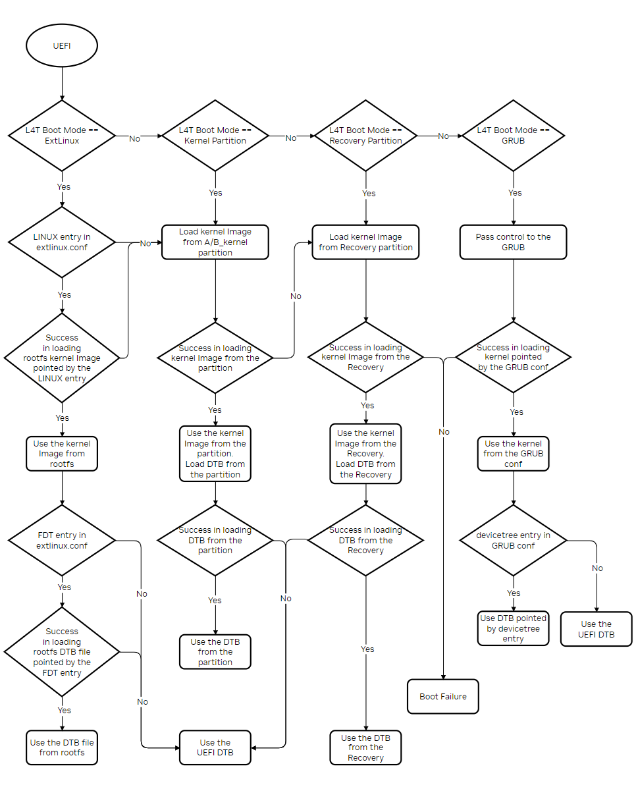

UEFI Adaptation#
This section provides high level info for the users to adapt to using UEFI. CBoot was used in the prior rel-32 release, and is now replaced with UEFI starting with rel-34 release and onward.
Sources and Compilation#
UEFI sources and compilation details for this release are available NVIDIA/edk2-nvidia.
Viewing the BSP Version in UEFI#
The Jetson BSP version shows on the screen when booting to UEFI. The string format is as follows:
Jetson System firmware version <bsp_branch>.<bsp_major>.<bsp_minor>-gcid-<xxxxxxxx> date <YYYY>-<MM>-<DD>T<HH>:<MM>:<SS>+<TZ>
For example:
Jetson System firmware version 36.3.0-gcid-36191598 date 2024-05-06T16:58:59+00:00
UEFI Variables#
UEFI variables provide a way to store data, in particular non-volatile data. Some UEFI variables are shared between platform firmware and operating systems. The variables are defined as key/value pairs that consist of identifying information plus attributes (the key) and arbitrary data (the value).
Refer to NVIDIA Defined variables for more information about NVIDIA® defined variables.
There are two additional UEFI variables defined for Rootfs A/B:
Variable Name |
Space |
Attribute |
Description |
Structure |
|---|---|---|---|---|
RootfsStatusSlotA |
Public |
BS, NV, RT |
The status of rootfs slot A |
|
RootfsStatusSlotB |
Public |
BS, NV, RT |
The status of rootfs slot B |
|
For the other UEFI variables defined in the UEFI Specification, refer to Globally Defined Variables for more information.
Boot Order Selection#
Supported Boot Device and the Default Boot Order#
OS boot is supported from eMMC/SD/UFS/NvME/USB (T234 only). Removable devices (SD/USB) take precedence over non-removable (eMMC/NvME/UFS) devices in the default boot order.
Selecting the Boot Device in the UEFI#
On the landing page of UEFI menu options, when you are prompted to Press ESCAPE for boot options, navigate to Boot Manager and select an option from this list.
Customizing the Default Boot Order in the Configuration File#
Note
This method only sets the default boot order on the first boot after flashing. If additional storage devices are added in subsequent boots, those storage devices will be appended to the top or the bottom boot order based on UEFI Boot Order setting in the UEFI menu regardless of the storage device type.
If the user does not rebuild UEFI from source, change the default boot order in L4TConfiguration.dtbo or
change the default boot order in L4TConfiguration.dts in the UEFI source.
Customizing the Default Boot Order in L4TConfiguration.dtbo in the BSP Directory#
Convert the L4TConfiguration.dtbo file to L4TConfiguration.dts file:
$ cd <top> $ kernel/dtc -I dtb -O dts -o kernel/dtb/L4TConfiguration.dts kernel/dtb/L4TConfiguration.dtbo
<top>is the pathname of the flash.sh directory, which contains the PDK installation package.
Change the default boot order in L4TConfiguration.dts:
/ { overlay-name = "L4T Configuration Settings"; fragment@0 { target-path = "/"; board_config { sw-modules = "uefi"; }; __overlay__ { firmware { uefi { variables { gNVIDIAPublicVariableGuid { ... ... ... }; gNVIDIATokenSpaceGuid { DefaultBootPriority { data = "usb,nvme,emmc,sd,ufs"; /* data = "Replace above data with your default boot order strings"; */ locked; }; }; }; }; }; }; }; };Set the default boot order to the
DefaultBootPriorityvariable and separate the strings by commas. The valid strings are:"usb" - USB devices "sd" - SD devices "emmc" - eMMC devices "nvme" - NVMe devices "ufs" - UFS devices "sata" - SATA devices "scsi" - SCSI devices "pxev4" - IPv4 PXE boot "httpv4" - IPv4 HTTP boot "pxev6" - IPv6 PXE boot "httpv6" - IPv6 HTTP boot "cdrom" - CD/DVD drives "boot.img" - Android style boot.img partition
Convert the L4TConfiguration.dts file to L4TConfiguration.dtbo file:
$ cd <top> $ kernel/dtc -I dts -O dtb -o kernel/dtb/L4TConfiguration.dtbo kernel/dtb/L4TConfiguration.dts
<top>is the pathname of the flash.sh directory, which contains the PDK installation package.
Flash the Jetson device.
Customize the Default Boot Order in the L4TConfiguration.dts in UEFI Source#
Change the default boot order variable
DefaultBootPriorityin the L4TConfiguration.dts file in theSilicon/NVIDIA/Tegra/DeviceTree/UEFI source directory.Build the UEFI from source and copy the generated
L4TConfiguration.dtbofile to the<top>/kernel/dtb/BSP directory.Flash the Jetson device.
Overriding the Default Boot Order During Flashing#
Note
This method only sets the default boot order on the first boot after flashing. If additional storage devices are added in subsequent boots, those storage devices will be appended to the top or the bottom boot order based on UEFI Boot Order setting in the UEFI menu regardless of the storage device type.
In addition to customizing the default boot order, you can also override the default boot order by providing a DTBO through
ADDITIONAL_DTB_OVERLAY environment variable. For example, you can set the NVMe as default boot device for Jetson AGX Orin:
sudo ADDITIONAL_DTB_OVERLAY="BootOrderNvme.dtbo" ./flash.sh jetson-agx-orin-devkit nvme0n1p1
To set another storage device as the default boot device, set the following DTBO to the ADDITIONAL_DTB_OVERLAY environment variable:
eMMC device:
BootOrderEmmc.dtboUSB device:
BootOrderUsb.dtboUFS device:
BootOrderUfs.dtboSATA device:
BootOrderSata.dtboPXE boot:
BootOrderPxe.dtbo
Boot Mode Selection#
In the JetPack SDK, L4tLauncher serves as the default OS Loader for the UEFI. L4tLauncher provides multiple ways to load the kernel image and DTB, controlled by the Boot Mode setting.
Customizing the Default Boot Mode in the Configuration File#
Change the default boot mode in L4TConfiguration.dtbo if users do not rebuild UEFI from the source or
change the default boot mode in L4TConfiguration.dts in the UEFI source.
Customizing the Default Boot Mode in L4TConfiguration.dtbo in the BSP Directory#
Convert the L4TConfiguration.dtbo file to L4TConfiguration.dts file:
$ cd <top> $ kernel/dtc -I dtb -O dts -o kernel/dtb/L4TConfiguration.dts kernel/dtb/L4TConfiguration.dtbo
<top>is the pathname of the flash.sh directory, which contains the PDK installation package.
Change the default boot mode in the L4TConfiguration.dts:
/ { overlay-name = "L4T Configuration Settings"; fragment@0 { target-path = "/"; board_config { sw-modules = "uefi"; }; __overlay__ { firmware { uefi { variables { gNVIDIAPublicVariableGuid { QuickBootEnabled { data = [00]; non-volatile; }; ... ... ... L4TDefaultBootMode { data = [01 00 00 00]; /* data = "Replace above data with your default boot mode value"; */ runtime; non-volatile; }; }; gNVIDIATokenSpaceGuid { ... ... ... }; }; }; }; }; }; };Set the default boot mode to the
L4TDefaultBootModevariable. The valid values are:[ 00 00 00 00 ] - Boot GRUB [ 01 00 00 00 ] - Boot normal kernel and DTB in filesystem [ 02 00 00 00 ] - Boot normal kernel and DTB in partitions [ 03 00 00 00 ] - Boot recovery kernel and DTB in partitions
Convert the L4TConfiguration.dts file to L4TConfiguration.dtbo file:
$ cd <top> $ kernel/dtc -I dts -O dtb -o kernel/dtb/L4TConfiguration.dtbo kernel/dtb/L4TConfiguration.dts
<top>is the pathname of the flash.sh directory, which contains the PDK installation package.
Flash the Jetson device.
Customizing the Default Boot Mode in L4TConfiguration.dts in the UEFI Source#
Change the
L4TDefaultBootModedefault boot mode variable in the L4TConfiguration.dts file in theSilicon/NVIDIA/Tegra/DeviceTree/UEFI source directory.Build the UEFI from source and copy the generated L4TConfiguration.dtbo file to the
<top>/kernel/dtb/BSP directory.Flash the Jetson device.
Set the System to Normal Boot from the Recovery Kernel Boot#
When the system enters the recovery kernel shell, you can exit the recovery boot in one of the following ways:
Change the configurations in the UEFI menu.
Set the
RootfsStatusSlotAandL4TDefaultBootModeUEFI variables in the recovery shell. Set theRootfsStatusSlotBUEFI variable if the rootfs A/B is enabled.
Set the UEFI Variable in the Recovery Kernel Shell#
When the system enters the recovery kernel shell, to set the system back to normal boot:
Mount the
efivarfs:# mount -t efivarfs none /sys/firmware/efi/efivars/
Restore the rootfs status UEFI variable:
# cd /sys/firmware/efi/efivars/ # printf "\x07\x00\x00\x00\x00\x00\x00\x00" > /tmp/var_tmp.bin # chattr -i RootfsStatusSlotA-781e084c-a330-417c-b678-38e696380cb9 # dd if=/tmp/var_tmp.bin of=RootfsStatusSlotA-781e084c-a330-417c-b678-38e696380cb9 bs=8;sync # xxd RootfsStatusSlotA-781e084c-a330-417c-b678-38e696380cb9 # check the value # chattr +i RootfsStatusSlotA-781e084c-a330-417c-b678-38e696380cb9
If Rootfs A/B is enabled:
# printf "\x07\x00\x00\x00\x00\x00\x00\x00" > /tmp/var_tmp.bin # chattr -i RootfsStatusSlotB-781e084c-a330-417c-b678-38e696380cb9 # dd if=/tmp/var_tmp.bin of=RootfsStatusSlotB-781e084c-a330-417c-b678-38e696380cb9 bs=8;sync # xxd RootfsStatusSlotB-781e084c-a330-417c-b678-38e696380cb9 # check the value # chattr +i RootfsStatusSlotB-781e084c-a330-417c-b678-38e696380cb9
Restore the default boot mode UEFI variable:
# cd /sys/firmware/efi/efivars/ # printf "\x07\x00\x00\x00\x01\x00\x00\x00" > /tmp/var_tmp.bin # chattr -i L4TDefaultBootMode-781e084c-a330-417c-b678-38e696380cb9 # dd if=/tmp/var_tmp.bin of=L4TDefaultBootMode-781e084c-a330-417c-b678-38e696380cb9 bs=8;sync # xxd L4TDefaultBootMode-781e084c-a330-417c-b678-38e696380cb9 # check the value # chattr +i L4TDefaultBootMode-781e084c-a330-417c-b678-38e696380cb9
Reboot the target device:
# cd / # umount /sys/firmware/efi/efivars/ # reboot
Customized Logo:#
How to customize BMP?
For NVIDIA® Jetson AGX Orin™
To change the logo displayed during UEFI boot, edit the files in edk2-nvidia/Silicon/NVIDIA/Assets. If you add/remove files or change names the files info can be updated in Platform/NVIDIA/NVIDIA.fvmain.fdf.inc. The relevant section is as shown below:
FILE FREEFORM = gNVIDIAPlatformLogoGuid { SECTION RAW = Silicon/NVIDIA/Assets/nvidiagray480.bmp SECTION RAW = Silicon/NVIDIA/Assets/nvidiagray720.bmp SECTION RAW = Silicon/NVIDIA/Assets/nvidiagray1080.bmp } Customers can replace the NVIDIA provided logo files with their own files and ensure the UEFI binary with the logo file(s) do not exceed the UEFI partition size (3.5MB) in the partition XML file. The partition XML files for various platforms are located in the ./bootloader/generic/cfg/ directory.
DTB Support#
- Selection Order
L4tLauncher selects the kernel image and DTB as shown in the following flowchart:

- How to customize
User can specify a custom DTB for kernel by modifying the FDT tag in /boot/extlinux/extlinux.conf file in rootfs. User can also uncomment backup boot option in the same file for adding an entirely new OS boot option.
- DTB Overlays
DTB in use by UEFI and/or kernel can be updated using overlays that are applied during boot based on platform parameters like board-id/odm-data/fuse-info/sw-module. Criteria for applying an overlay can be specified in board_config node and if every criteria in the node matches, the overlay is applied on base DTB.
An example structure of an overlay device tree file is as shown below:
/ {
fragment@0 {
target= "<&uartc>";
delete_prop = "early-print-console-channel";
board_config {
ids = "2888-0001-400", "3360-1099-100" ;
odm-data = "enable-high-speed-uart";
sw-modules = “kernel”;
};
__overlay__ {
compatible = "nvidia,tegra186-hsuart";
reset-names = "serial";
};
};
fragment@1 {
target-path = "/nvenc@154c0000";
board_config {
fuse-info = "fuse-disable-nvenc";
};
__overlay__ {
status = "disabled";
};
};
};
- ids property in board_config can specify a list of board-id, one of which has to match
the board IDs read from platform EEPROMs.
- odm-data property in board_config can specify a list of odm data strings that are matched
against /chosen/odm-data property strings in base DTB to find if there is a match.
User can specify valid odm data strings for a platform during flash.
- fuse-info property in board_config can specify a list of fuse strings for floor sweeping configuration.
- The sw-modules property in board_config can specify if an overlay needs to be applied to only UEFI DTB,
kernel DTB or both. If this property is not present, overlay is applied to both kernel as well as UEFI dtb.
- Supporting DTBO (Device Tree Blob Overlay) for the camera module (instead of using the prior supported plug-in manager)
Because UEFI boot is enabled in this release, the plugin manager is no longer supported. You must create a device tree overlay (DTB overlay, or .dtbo) file to register the camera module. If your camera module has on-board EEPROM and is programmed with a valid camera ID, you can use the device tree overlay file at to apply the overlay for a specific camera module and update the device tree entries with proper information at run time. Using a device tree overlay with an EEPROM ID allows a single system image to support multiple camera devices. To select a different camera, power down the device, replace the camera module, and then reboot. The new module works automatically.
To create and apply a device tree overlay file:
Add the .dtsi file to the camera configuration .dtsi file.
Set the status of your device tree nodes to “disabled”:
imx185_cam0: imx185_a@1a { status = "disabled"; };Add the overlay information as fragments below to a new .dts file like this:
<top>/hardware/nvidia/t23x/nv-public/overlay/tegra234-p3737-camera-dual-imx274-overlay.dts #You can also see the camera DTB overlay files provided with current release for example.
Update the .dts file with proper overlay information and a compatible string:
overlay-name = "Jetson Camera Dual-IMX274"; jetson-header-name = "Jetson AGX CSI Connector"; compatible = "nvidia,p3737-0000+p3701-0000", "nvidia,p3737-0000+p3701-0004", "nvidia,p3737-0000+p3701-0005"; fragment@0 { target-path = "/bus@0/i2c@3180000/tca9546@70/i2c@0/imx274_a@1a"; board_config { ids = "LPRD-dual-imx274-002"; sw-modules = "kernel"; }; __overlay__ { status = "okay"; }; }; fragment@1 { ... ... ... };Compile the .dts file to generate a .dtbo file. Move the .dtbo file to flash_folder/kernel/dtb/ before flashing.
Add this line to the <board>.conf file, which is used for flashing the device:
OVERLAY_DTB_FILE=”${OVERLAY_DTB_FILE},tegra234-p3737-camera-dual-imx274-overlay.dtbo”; # The line causes the following steps to be performed: # - If a specific camera board is found when the kernel boots, the override data is applied to that camera board’s tree nodes. # - The tree nodes are made available for the system to use.
Grub support#
The default OS Loader is L4tLauncher. To use Grub to boot Jetson devices, complete the following steps:
Flash the Jetson device. Refer to To Flash Jetson Developer Kit Operating Software for more information.
Ensure that the Jetson device is connected to the Internet and boot the device.
Back up the default OS Loader
BOOTAA64.efi(L4tLauncher):# Back up the defalut BOOTAA64.efi $ sudo mv /boot/efi/EFI/BOOT/BOOTAA64.efi /boot/efi/EFI/BOOT/Backup_BOOTAA64.efi $ ls -R /boot/efi
To install the Grub Debian package, run the following commands:
$ sudo apt-get update $ sudo apt-get install grub-efi-arm64-bin
To install Grub, run the following commands:
# Install Grub to system $ sudo grub-install --bootloader-id=Ubuntu --efi-directory=/boot/efi --target=arm64-efi # Check installed Grub version $ sudo grub-install --version # Check the installed files $ ls -R /boot/efi
Customize the Grub template file (
/etc/grub.d/40_custom):# Get the device node of current rootfs: RFS_DEV $ sudo df -h For example, RFS_DEV=/dev/mmcblk0p1 # Get the filesystem UUID of current rootfs: RFS_FSUUID $ sudo tune2fs -l ${RFS_DEV} | grep UUID For example, RFS_FSUUID=acad60d2-d5c7-45f7-83e5-8721f08dfea7 # Get the command line of target device: CMD_LINE $ cat /proc/cmdline For example, CMD_LINE="root=/dev/mmcblk0p1 rw rootwait rootfstype=ext4 mminit_loglevel=4 console=ttyTCU0,115200 console=ttyAMA0,115200 console=tty0 firmware_class.path=/etc/firmware fbcon=map:0 net.ifnames=0" # Add following entries to ``/etc/grub.d/40_custom`` that will be displayed on the Grub menu. menuentry 'Jetson Linux' { echo "Booting Jetson Linux..." search --no-floppy --fs-uuid --set=root ${RFS_FSUUID} linux /boot/Image ${CMD_LINE} initrd /boot/initrd } menuentry "System restart" { echo "System rebooting..." reboot }Generate the main configuration file (
/boot/grub/grub.cfg):$ sudo su -c "grub-mkconfig > /boot/grub/grub.cfg"
(Optional) To test the Grub menu, change the default configurations in
/etc/default/grubto the following:# Add a “#” at the beginning of the line #GRUB_TIMEOUT_STYLE=hidden # Change the timeout for grub menu GRUB_TIMEOUT=10 # To see grub output on serial port rather than display GRUB_TERMINAL=console
Change grub menu order such that Jetson Linux is first/default:
$ sudo su -c "mv /etc/grub.d/30_uefi-firmware /etc/grub.d/42_uefi-firmware"
Update the /boot/grub/grub.cfg:
$ sudo su -c "update-grub"
Reboot the Jetson device, and the system will successfully boot with Grub. When booting the Linux kernel, the following log is displayed:
Booting Jetson Linux... EFI stub: Booting Linux Kernel... ......
The “Ubuntu” entry is at top of Boot Manager Menu if entering UEFI menu -> Boot Manager. The Grub menu will appear when UEFI boots Grub if step 8 is done.
Note
To switch back to boot L4tLauncher, create a boot entry using efibootmgr. For example:
$ sudo efibootmgr -c -d /dev/mmcblk0 -p 10 -L "L4TLauncher" -l "\EFI\BOOT\Backup_BOOTAA64.efi
miniUEFI Support#
There is a minimal configuration UEFI called miniUEFI for the Jetson AGX Orin series. This build disables all unnecessary hardware to boot off
eMMC on Orin, and it is smaller and boots faster.
The build is configured to launch the built-in L4TLauncher binary in BDS. Security is provided by encrypted load targets for components that are loaded off eMMC (kernel, initrd, and so on). UEFI Secure boot is enabled and expected to be set up using the device tree methods. Persistent variables are not supported.
Building the miniUEFI#
To build the miniUEFI, refer to Building UEFI for NVIDIA Platforms for more information.
Run the following commands:
$ cd nvidia-uefi
$ edk2_docker edk2-nvidia/Platform/NVIDIA/JetsonMinimal/build.sh
The generated miniUEFI binaries uefi_JetsonMinimal_DEBUG.bin and uefi_JetsonMinimal_RELEASE.bin are under the images directory.
Flashing the miniUEFI#
To flash the miniUEFI to the Jetson AGX Orin, replace the Linux_for_Tegra/bootloader/uefi_jetson.bin with the generated miniUEFI binary.
Put the device into recovery mode.
Run the following command to flash the entire device:
$ sudo ADDITIONAL_DTB_OVERLAY="BootOrderEmmc.dtbo" ./flash.sh jetson-agx-orin-devkit internal